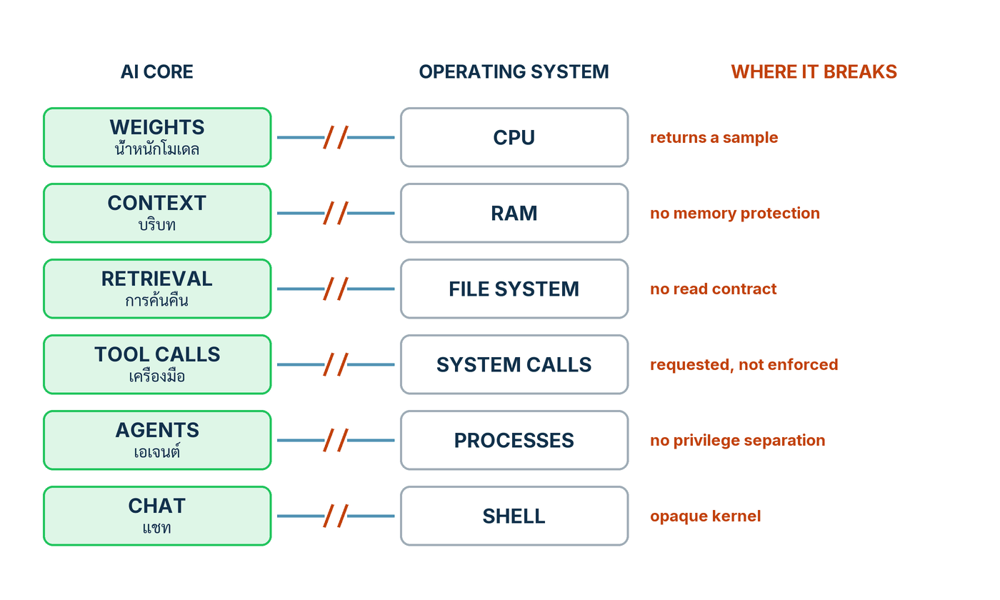

ในบทความนี้
- มองแกน AI เป็นระบบปฏิบัติการ — หกคู่เทียบจาก weights = CPU ถึงแชท = เชลล์ และทรัพย์สินจริงที่ไม่ใช่ตัวแชตบอต
- รอยต่อที่การรับประกันเดิมพัง — ไล่ทีละรอย จาก CPU ที่คืนตัวอย่างสุ่ม ถึง kernel ที่อ่าน source ไม่ได้
- ลงมือทำ 7 ขั้น — จากตาราง mapping ของระบบคุณเอง สู่ทะเบียนรอยต่อฉบับแรกที่ commit ได้จริง
- ทะเบียนรอยต่อของน้องคราม — หกแถวเต็ม พร้อมคอลัมน์ที่ซื่อสัตย์ที่สุดในเอกสารทั้งฉบับ: ใครบังคับวันนี้
- Validation check — เจ็ดคำถามที่ต้องตอบด้วย artifact ไม่ใช่คำคุณศัพท์
- ก้าวต่อไป — จากแผนที่รอยต่อ สู่การตรึงทุกพจน์ที่กำหนดพฤติกรรมเข้า manifest เดียวในตอนถัดไป
In this post
- The AI core as an operating system — six mappings from weights = CPU to chat = shell, and why the real asset is not the chatbot
- The seams where the old guarantees break — row by row, from a CPU that returns a sample to a kernel whose source cannot be read
- The seven steps — from a mapping table of your own system to a first seam register you can actually commit
- Nong Kram's seam register — six full rows, with the most honest column in the whole document: who enforces this today
- Validation check — seven questions that must be answered with artifacts, not adjectives
- The road ahead — from a map of the seams to pinning every behaviour-determining term into one manifest in the next post
🤔 ทีมของคุณเรียกระบบ AI ที่ดูแลอยู่ว่า "แชตบอตตัวหนึ่ง" — แล้วถ้าสิ่งที่คุณดูแลอยู่จริง ๆ คือคอมพิวเตอร์ทั้งเครื่อง ที่ไม่มี memory protection ไม่มีการตรวจสิทธิ์ system call และอ่าน source ของ kernel ไม่ได้เลยล่ะ?
ตอนที่แล้ว Software 1.0 · 2.0 · 3.0 เราเห็นว่าสามยุคไม่แทนที่กันแต่ซ้อนเป็นชั้นในระบบเดียว และคานงัดของวิศวกรย้ายจาก control flow สู่ dataset กับ loss มาหยุดที่ context ที่ประกอบตอนรัน เราปิดตอนด้วยบัญชี artifact ของน้องครามที่ระบุว่าพฤติกรรมแต่ละส่วนอยู่ชั้นไหน คำถามที่ค้าง: เมื่อชั้น 3.0 กำหนดพฤติกรรมมากที่สุด เราควรมองภาพรวมด้วยกรอบอะไร — เพราะ mental model ที่เลือกจะกำหนดว่าเราถามคำถามชุดไหนกับระบบ และมองข้ามความเสี่ยงชุดไหนโดยไม่รู้ตัว
คำตอบของเปเปอร์[1] และของตอนนี้อยู่ในประโยคเดียว: มองแกน AI เป็นระบบปฏิบัติการ ไม่ใช่แอปพลิเคชัน — weights คือ CPU, context window คือ RAM, retrieval คือไฟล์ซิสเต็ม, tool call คือ system call, agent คือ process และแชทภาษาธรรมชาติคือเชลล์ แต่คุณค่าจริงของอุปมาอยู่ที่รอยแตกของมัน: ทุกแถวพกการรับประกันที่ระบบปฏิบัติการเคยให้ และฝั่งแกน AI ทำหายหมดทุกข้อ — ตำแหน่งที่หายคือแผนที่งานของทั้งซีรีส์ ตอนนี้จบด้วย artifact ชิ้นแรกที่วาดแผนที่นั้น: ทะเบียนรอยต่อของน้องคราม ที่ตอนที่ 8 จะหยิบไปแปลงเป็นรางควบคุมทีละแถว
1. มองแกน AI เป็นระบบปฏิบัติการ ไม่ใช่แอปพลิเคชัน
ข้อสรุปของหัวข้อนี้มาก่อน: Table 4 ของเปเปอร์วางคู่เทียบไว้หกคู่ — weights ≈ CPU, context window ≈ RAM, retrieval/RAG ≈ ไฟล์ซิสเต็ม, tool call ≈ system call, agent ≈ process และแชทภาษาธรรมชาติ ≈ เชลล์[1] ประโยชน์ทันทีของตารางคือการย้ายสายตา: จาก "ฟีเจอร์แชตตัวหนึ่ง" ไปเห็นเครื่องทั้งเครื่อง — มีหน่วยความจำ มีไฟล์ มีช่องเรียกใช้อำนาจภายนอก และมีงานหลายงานวิ่งพร้อมกัน
ผมยืนยันจากประสบการณ์รีวิวระบบจริง: ทีมที่มองระบบเป็น "แอป" จะทดสอบแบบแอป — พิมพ์ถาม อ่านคำตอบ พอใจแล้วปล่อย ส่วนทีมที่มองเป็น "เครื่อง" จะถามแบบผู้ดูแลเครื่อง: หน่วยความจำถูกปกป้องไหม ใครมีสิทธิ์เรียก system call เปิด log ย้อนหลังได้แค่ไหน คำถามคนละชุดนำไปสู่การควบคุมคนละชุด — และ Table 4 คือเครื่องมือเปลี่ยนชุดคำถามที่ถูกที่สุดที่ผมรู้จัก
{kind=link}

| ฝั่งระบบปฏิบัติการ | ฝั่งแกน AI | สิ่งที่คู่เทียบนี้จับได้ | ในน้องคราม |
|---|---|---|---|
| CPU | weights ของโมเดล | เครื่องคำนวณกลางที่ทุกคำขอต้องวิ่งผ่าน — ตายตัวต่อรุ่น ไม่เรียนรู้อะไรเพิ่มระหว่างใช้งาน | โมเดล hosted รุ่นที่ pin ไว้ (เรียกนามธรรมว่า M_v) ที่ประมวลทุกข้อความของลูกค้า |
| RAM | context window | หน่วยความจำทำงานที่ถูกประกอบขึ้นใหม่ต่อคำขอ — คำสั่ง ประวัติ และข้อมูลที่ดึงมา อยู่รวมกันในนั้น | บทบาทของน้องคราม + ประวัติแชท + ท่อนนโยบายที่ถูกดึงมา ประกอบใหม่ทุกเทิร์น |
| ไฟล์ซิสเต็ม | retrieval / RAG | ความรู้ถาวรที่ถูก "อ่าน" เข้ามาตอนรัน แทนที่จะถูกฝังไว้ในตัวโปรแกรม | คลัง policy/ (นโยบายคืนสินค้า เงื่อนไขจัดส่ง) และ catalog/ (หน้าสินค้า) |
| system call | tool call | ช่องทางเดียวที่การคำนวณข้างในแตะโลกภายนอกได้จริง | refund(order_id, amount, reason) ที่มีผลจริง และการอ่านข้อมูลออเดอร์แบบ read-only |
| process | agent | งานหลายงานที่วิ่งพร้อมกันบนแกนคำนวณเดียวกัน | เซสชันสนทนาของลูกค้าหลายรายที่วิ่งขนานกันบนแกนเดียว |
| เชลล์ | แชทภาษาธรรมชาติ | อินเทอร์เฟซที่มนุษย์ใช้สั่งเครื่องทั้งเครื่อง | หน้าต่างแชตบนเว็บของร้านและบน LINE |
ทรัพย์สินจริงคือข้อมูลกับโปรโตคอล ไม่ใช่ตัวแชต
มุมที่หลายองค์กรมองสลับ และเปเปอร์ชี้ตรง ๆ: ตัวเชลล์ — หน้าต่างแชตที่ทุกคนเห็น — คือส่วนที่แทนที่ง่ายที่สุดของเครื่อง ทรัพย์สินจริงอยู่ที่ข้อมูลและโปรโตคอล — คลังความรู้ที่ curate แล้ว สคีมา tool ที่รัดกุม กติกาประกอบบริบท — สิ่งที่สะสมมูลค่าและถ่ายโอนข้ามรุ่นโมเดลได้[1] ของครามคราฟต์: คลัง policy/ กับ catalog/ ที่จัดระเบียบดี และสคีมา refund ที่เงื่อนไขครบ อายุยืนกว่าการเลือกโมเดลรุ่นไหนหลายเท่า
และประโยคที่คมที่สุดของหัวข้อนี้ในเปเปอร์ว่าด้วยสิ่งที่เกิดขึ้นเมื่อองค์กรไม่มองแบบนี้: แชตบอตที่ติดกาวไว้ข้างระบบเดิมคือ "one application, mistaken for a computer" — แอปพลิเคชันตัวเดียว ที่ถูกเข้าใจผิดว่าเป็นคอมพิวเตอร์ทั้งเครื่อง[1] องค์กรที่ "ซื้อแชตบอต" มักได้แอปหนึ่งตัวโดยไม่มีเครื่องอยู่ข้างใต้ — ไม่มีไฟล์ซิสเต็มที่ดูแล ไม่มีชั้นตรวจ system call ไม่มี log ระดับเครื่อง วันที่อยากให้มัน "ทำได้มากขึ้น" ก็ต่อ tool เข้าไปตรง ๆ กลายเป็นเครื่องที่ประกอบขึ้นโดยบังเอิญ ไม่มีใครเคยออกแบบชั้นป้องกันเลย
💡 มุมมองของผม: ใช้อุปมานี้เป็น "เครื่องตั้งคำถาม" อย่าใช้เป็นพิมพ์เขียวสถาปัตยกรรม — ไม่ต้องสร้าง scheduler หรือ virtual memory ให้โมเดล คุณค่าของมันคือทำให้คำถามระดับ OS โผล่ในห้องรีวิว: memory protection อยู่ไหน ใคร authorize system call แล้ว log ระดับ kernel อยู่กับใคร — สามคำถามนี้เปิดงานทั้งหมดที่เหลือของซีรีส์
2. รอยต่อที่การรับประกันเดิมพัง
อุปมาทุกอันมีจุดพัง และของ Table 4 จุดพังคือสาระทั้งหมด: ฝั่งระบบปฏิบัติการของทุกแถวพก การรับประกันเชิงโครงสร้าง (structural guarantee) ที่วิศวกรรมซอฟต์แวร์พึ่งพามาตลอด ส่วนฝั่งแกน AI ไม่เหลือสักข้อ[1] หัวข้อนี้ไล่ทั้งหกรอยทีละแถว เพราะตำแหน่งของรอยคือแผนที่งานของซีรีส์: จุดที่งานวิศวกรรมยาก และจุดที่การควบคุมทั้งหมดจะไปวาง
CPU ที่ไม่คืนคำตอบ แต่คืน "ตัวอย่างสุ่ม"
CPU จริงให้การรับประกันที่เราลืมไปแล้วว่าเป็นการรับประกัน: คำสั่งเดียวกัน ข้อมูลเดียวกัน ผลเดียวกัน ทุกครั้ง ตลอดไป โมเดลไม่ให้ข้อนี้ — สิ่งที่มันคืนมาคือตัวอย่างหนึ่งตัวที่สุ่มจากการแจกแจงความน่าจะเป็น[1] รันคำถามเดิมซ้ำแล้วได้คนละคำตอบ ไม่ใช่อาการของบั๊ก แต่เป็นพฤติกรรมปกติของเครื่อง
ข้อควรระวังที่ถูกอ้างผิดบ่อย: deterministic decoding — temperature ศูนย์ pin seed — ตัดได้เฉพาะความแปรปรวนจากการสุ่ม แต่ตัดความไวต่อรุ่นโมเดลไม่ได้[1] มันทำให้กติกาการเลือกคำทำซ้ำได้ แต่วันที่ผู้ให้บริการอัปเดตรุ่น การแจกแจงข้างใต้เปลี่ยนทั้งผืน — เทียบเท่าสลับ CPU ทั้งตัวโดย opcode เดิมให้ผลใหม่ นี่คือเหตุที่ M_v ต้องถูก pin และตอนถัดไปจะบังคับ pin ทุกพจน์ที่เหลือ
RAM ที่ไม่มี memory protection
ระบบปฏิบัติการจริงมี MMU แยก address space แยก kernel จาก user space — โปรแกรมหนึ่งเขียนทับหน่วยความจำของอีกโปรแกรมไม่ได้โดยดีไซน์ context window ไม่มีอะไรแบบนั้นเลย: system prompt ข้อความลูกค้า ท่อนที่ retrieve มา และผลจาก tool นั่งเรียงเป็น token ในช่องเดียว ไม่มีบิตไหนบอกโมเดลว่า token นี้คือ "คำสั่งของเจ้าของบ้าน" ส่วน token นั้นคือ "ข้อมูลจากคนแปลกหน้า" — คำสั่งกับข้อมูลแชร์ช่องเดียวกัน[1]
ช่องเดียวนี้คือฐานเชิงโครงสร้างของ การฉีดคำสั่งแฝง (prompt injection)[1] และรูปแบบที่อันตรายกว่าคือ การฉีดคำสั่งแฝงทางอ้อม (indirect prompt injection): ผู้โจมตีไม่ต้องพิมพ์ใส่แชตเองด้วยซ้ำ แค่วางข้อความไว้ในที่ที่ระบบจะไปอ่านเข้ามาเองภายหลัง — Greshake และคณะสาธิตกับแอปพลิเคชันจริงที่ผูก LLM ไว้ตั้งแต่ปี 2023[2] และ OWASP จัด prompt injection ไว้เป็นรายการแรกของ Top 10 for LLM Applications ฉบับปี 2025[3] สำหรับน้องคราม ถนนเข้าช่องนี้มีจริงวันนี้อย่างน้อยสองสาย: รีวิวสินค้าในหน้า catalog ที่ถูก retrieve และข้อความจากสลิปที่ลูกค้าอัปโหลด
ไฟล์ซิสเต็มที่ไม่มีสัญญาการอ่าน
สัญญาของไฟล์ซิสเต็มเรียบง่ายจนไม่มีใครนึกถึงมัน: read เดิมคืน bytes เดิม จนกว่าจะมีใคร write ฝั่ง retrieval ไม่มีสัญญาข้อนี้ — "อ่านไฟล์เดียวกันสองครั้ง" อาจได้คนละชุด เพราะ corpus ถูก re-index ไปแล้ว ranker เปลี่ยนรุ่น หรือมีเอกสารใหม่เพิ่มเข้ามาหนึ่งหน้าแล้วลำดับผลการค้นเปลี่ยนทั้งกระดาน — ทั้งเวอร์ชันของ corpus และการจัดอันดับล้วนเปลี่ยนชุดข้อความที่ถูกดึงได้[1]
ผลเชิงวิศวกรรมตรงตัว: ลูกค้าสองคนถามคำถามเดียวกันห่างกันหนึ่งวัน อาจได้คำตอบที่ "อ่าน" นโยบายคนละเวอร์ชัน โดยไม่มีบันทึกเลยว่าใครอ่านอะไร ทางแก้ไม่ใช่ห้ามแตะ corpus แต่คือปฏิบัติกับ retrieval เป็นไฟล์ซิสเต็มที่มีเวอร์ชัน — snapshot มีเลขรุ่น ชุดที่ถูกอ่านต่อคำตอบถูกบันทึก ขั้นที่ 5 ทำเรื่องนี้ให้จบในวันเดียว
system call ที่ถูก "ขอ" เป็นภาษาธรรมชาติ
ในระบบปฏิบัติการจริง system call คือพรมแดนแข็ง: kernel ตรวจสิทธิ์ก่อนลงมือ ทุกครั้ง ไม่มีข้อยกเว้น ในโลกแกน AI พรมแดนนี้ถูกขอเป็นภาษาธรรมชาติ — โมเดล generate ข้อความที่ harness ตีความว่าเป็นการเรียก tool[1] สิ่งที่ generate ออกมาได้จึงมีสถานะเป็นข้อเสนอ ไม่ใช่การกระทำ และโมเดลที่ถูกโน้มน้าวได้ผ่าน context เป็นจุดตรวจสิทธิ์ไม่ได้โดยหลักการ: การอนุญาตต้องถูกบังคับนอกโมเดลเสมอ[1]
เรื่องนี้ไม่ใช่สถานการณ์สมมติ — agent hijacking ที่ผู้โจมตีฉีดเนื้อหามาชักนำ agent จริงจังถึงขั้น NIST CAISI เผยแพร่บทวิเคราะห์ทางเทคนิคเรื่องการทำ evaluation แบบนี้ให้แข็งแรงขึ้น[4] สำหรับครามคราฟต์ ความหมายตรงและแพง: refund ย้อนกลับไม่ได้ตั้งแต่ payment processor รับคำสั่ง จึงต้องมีผู้ตรวจสิทธิ์นอกโมเดลยืนคั่นเสมอ — วันนี้มีไหม ขั้นที่ 4 จะบังคับให้ตอบตรง ๆ
process ที่ไม่มี privilege separation
โปรเซสในระบบปฏิบัติการถูกแยกจากกันโดยดีไซน์ — address space แยก สิทธิ์ผู้ใช้แยก capability แยก ส่วน agent หลายตัว (หรือหลายเซสชันของ agent เดียว) ที่วิ่งบนแกนเดียวกัน ไม่มีการแยกสิทธิ์ติดตัวมาแต่กำเนิดระหว่างงานที่วิ่งพร้อมกัน[1] สิ่งเดียวที่คั่นงานหนึ่งจากอีกงานคือโค้ด harness ที่เราเขียนเอง — เป็นวินัยของเรา ไม่ใช่คุณสมบัติของแกน
น้องครามวันนี้เป็น agent เดียว แต่ให้บริการลูกค้าหลายรายพร้อมกัน คำถามที่ทะเบียนรอยต่อต้องบันทึกให้เห็น: อะไรกันไม่ให้ข้อมูลออเดอร์ของลูกค้ารายหนึ่งไหลปนเข้า context ของอีกราย และอะไรกันไม่ให้เซสชันของรายหนึ่งขอ refund ให้ออเดอร์ของอีกราย — คำตอบวันนี้พิงกับโค้ดจัดการเซสชันล้วน ๆ ซึ่งไม่เคยถูกทดสอบในมุมนี้เลย
kernel ที่อ่าน source ไม่ได้
การรับประกันข้อสุดท้ายของระบบปฏิบัติการคือข้อที่ลึกที่สุด: เมื่อพฤติกรรมแปลก เราเปิด source ของ kernel อ่านได้เสมอ ตรงนี้อุปมาพังแบบไม่มีชิ้นดี — weights อ่านแบบที่อ่านโค้ดไม่ได้ พฤติกรรมของแกนเป็นสิ่งที่งอกออกมา (emergent) ไม่ใช่สิ่งที่ถูก specify ไว้[1] ถามว่า "บรรทัดไหนทำให้ตอบแบบนี้" ไม่มีคำตอบ เพราะไม่มีบรรทัด
ทางออกไม่ใช่ยอมแพ้ แต่คือย้ายที่ลงทุน: เมื่ออ่าน source ไม่ได้ observability ต้องเข้ามาทำหน้าที่เสริมที่การอ่าน source เคยทำ[1] — บันทึกอินพุตและเอาต์พุตของเครื่องให้ครบพออธิบายย้อนหลังได้ สิ่งนี้จะโตเป็น ร่องรอยการตัดสินใจ (decision trace) ฉบับเต็มในตอนที่ 7 แต่เริ่มคิดได้ตั้งแต่วันนี้ด้วยคำถามข้อเดียว: ถ้าเมื่อวานน้องครามตอบแปลก วันนี้เรามีข้อมูลพอจะรู้ไหมว่าทำไม
หกแถว พังทั้งหก และไม่ได้พังแบบสุ่ม — เมื่อกางรอยทั้งหมดลงบนเส้นทางจริงของหนึ่งคำขอ (รับข้อความ → ประกอบบริบท → ดึงความรู้ → เรียก tool → ปล่อยคำตอบ) มันเรียงตัวเป็นรอยต่อห้าจุดบนเส้นทางนั้น: input, dialog, retrieval, execution และ output — ตำแหน่งเดียวกับที่ตอนที่ 8 จะวางรางควบคุมทั้งห้า[1]
3. ลงมือทำ 7 ขั้น
เจ็ดขั้นนี้ใช้เวลาราวครึ่งวันสำหรับระบบขนาดน้องคราม และผลิต artifact เดียว — ทะเบียนรอยต่อ — ที่จะกางฉบับเต็มในหัวข้อ 4 ทำตามลำดับ เพราะแต่ละขั้นป้อนขั้นถัดไป
ขั้นที่ 1 — วางหกองค์ประกอบของระบบคุณลงบนตารางเทียบ
เขียนหกแถวตามตารางในหัวข้อ 1 แล้วเติมคอลัมน์ "ของจริง" ของระบบคุณ: ชื่อโมเดลพร้อมรุ่น โค้ดที่ประกอบ context อยู่ไฟล์ไหน แหล่ง retrieval มีอะไรบ้าง รายชื่อ tool ทุกตัว งานอะไรวิ่งพร้อมกันบ้าง และผู้ใช้คุยผ่านช่องทางไหน กติกาข้อเดียว: ห้ามเขียนนามธรรม ทุกช่องต้องชี้ไฟล์ บริการ หรือ repo ที่มีจริงได้ หยิบบัญชี artifact จากตอนที่แล้วมากางข้าง ๆ จะเร็วขึ้นมาก
ขั้นนี้ยังไม่วิเคราะห์อะไรเลย — มันแค่บังคับให้เห็นว่าเครื่องมีชิ้นส่วนอะไร ซึ่งฟังดูง่ายจนน่าข้าม แต่ระบบจำนวนมากไม่เคยมีรายการนี้อยู่ที่ไหนเลย ของน้องคราม หกแถวออกมาแล้วเป็นคอลัมน์ขวาสุดของตารางในหัวข้อ 1 — งานของขั้นนี้คือทำแบบเดียวกันกับระบบของคุณ
ขั้นที่ 2 — เขียนการรับประกันเดิมที่คุณเผลอสมมติ ของทุกแถว
ต่อท้ายแต่ละแถวด้วยประโยคขึ้นต้นว่า "เราแอบสมมติว่า…" แล้วเขียนให้ซื่อสัตย์: เราแอบสมมติว่าอินพุตเดิมให้คำตอบเดิม ว่า system prompt ไม่มีทางถูกทับ ว่าพรุ่งนี้ retrieval จะคืนชุดเดิม ว่าโมเดลเรียกได้เฉพาะสิ่งที่เราอนุญาต ว่าเซสชันแยกกันเองโดยธรรมชาติ และว่าเมื่อจำเป็นเราจะ "เปิดดูข้างใน" ได้ การรับประกันที่อันตรายที่สุดคือข้อที่ไม่เคยถูกพูดออกมา — เพราะไม่มีใครตรวจสิ่งที่ไม่มีใครเคยพูด
ตัวอย่างจริงจากทีมครามคราฟต์ (เหตุการณ์สมมติของบทเรียน): ตอนผมถามว่าอะไรกันไม่ให้น้องครามคืนเงินเกินนโยบาย คำตอบแรกคือ "ก็เขียนไว้ใน system prompt แล้ว" — ประโยคนี้คือการเผลอสมมติที่หัวข้อ 2 เพิ่งรื้อ: เข้าใจว่าข้อความในบริบทเป็นข้อบังคับ ทั้งที่มันเป็นเพียงคำแนะนำต่อเครื่องที่ถูกโน้มน้าวได้ทางช่องเดียวกัน เขียนข้อสมมตินี้ลงกระดาษ แล้วขั้นที่ 4 จะจัดการมัน
ขั้นที่ 3 — ไล่หาช่องทางร่วมคำสั่ง/ข้อมูลของคุณให้ครบ
จากรอยต่อ RAM: ทุกที่ที่ข้อความจากบุคคลที่สามไหลเข้า context ได้ คือถนนเข้าหน่วยความจำที่ไม่มีการปกป้อง[1][2] เดินไล่ให้ครบแล้วเขียนเป็นรายการ ของน้องครามได้ห้าสาย:
- ข้อความแชตของลูกค้า (เว็บ + LINE) — untrusted โดยนิยาม นี่คือประตูหน้า
- ท่อนที่ retrieve จาก catalog/ — หน้าสินค้ามีรีวิวที่ลูกค้าเขียนฝังอยู่ ข้อความของคนแปลกหน้าจึงเดินเข้ามาทางประตู "ความรู้ของร้าน"
- ข้อความจากสลิปโอนเงินที่ลูกค้าอัปโหลด — ผ่าน OCR เข้ามาเป็นข้อความใน context โดยตรง
- ผลลัพธ์ tool: ช่อง note และที่อยู่ในข้อมูลออเดอร์ — ลูกค้าเป็นคนพิมพ์ค่าพวกนี้ตอนสั่งซื้อ ต่อให้มันเดินทางมาผ่านฐานข้อมูลของเราเอง มันก็ยังเป็นข้อความของบุคคลที่สาม
- ประวัติแชตย้อนหลัง — ทุกอย่างข้างบนที่เคยเข้ามาแล้ว ถูกม้วนกลับเข้า context อีกครั้งในเทิร์นถัดไป
ข้อที่ทีมมักตกใจคือข้อที่สี่ — ข้อมูลจาก tool "ของเราเอง" ก็พาข้อความของคนแปลกหน้าเข้ามาได้ ความ trusted ของท่อไม่ได้ทำให้เนื้อหาในท่อ trusted ตาม รายการห้าสายนี้จะกลายเป็นคอลัมน์ "อะไรเข้ามาตรงนั้น" ของแถว RAM ในทะเบียน
ขั้นที่ 4 — ประทับตราทุก tool call ว่า "ถูกขอ ไม่ใช่ถูกบังคับ" แล้วตอบว่าใครบังคับวันนี้
ทำบัญชี tool ทุกตัวของระบบ แล้วเติมคอลัมน์เดียวที่สำคัญ: ใครบังคับวันนี้ — ตอบตามความเป็นจริง ไม่ใช่ตามที่ตั้งใจจะทำ และบ่อยครั้งคำตอบที่ถูกต้องคือ "ไม่มี" ของน้องครามออกมาอย่างนี้:
# บัญชี tool call ของน้องคราม — สำรวจตามจริง ณ วันนี้
get_order(order_id) # อ่านอย่างเดียว
# ใครบังคับ: ไม่มี — รับ order_id ใดก็ได้
# ไม่ผูกกับตัวตนของลูกค้าที่กำลังแชต
refund(order_id, amount, reason) # มีผลจริง — ย้อนไม่ได้เมื่อ payment processor รับคำสั่ง
# ใครบังคับ: ข้อความใน system prompt เท่านั้น
# = ไม่มีกลไกใดอยู่นอกโมเดลคำว่า "ไม่มี" สองแห่งในบัญชีนี้คือประโยคที่มีค่าที่สุดของขั้นนี้ — มันยอมรับว่าพรมแดน system call ของเราไม่มี kernel เฝ้า[1] และมันคือแถววิกฤตของทะเบียนที่กำลังจะเกิด งาน agent hijacking ที่อ้างในหัวข้อ 2 คือภาพของระบบจริงที่ปล่อยคอลัมน์นี้ว่าง[4]
ขั้นที่ 5 — ปฏิบัติกับ retrieval เป็นไฟล์ซิสเต็มที่มีเวอร์ชัน
ตอบสองคำถามลงกระดาษ: หนึ่ง — snapshot ของ corpus ตอนนี้คือรุ่นอะไร ถ้าไม่มีเลขรุ่นให้ชี้ แปลว่ายังไม่มีคำตอบ สอง — คำถามเดียวกันถามสองครั้งอ่าน "ไฟล์" คนละชุดได้ไหม ไล่ดูว่า corpus กับ ranker เปลี่ยนเมื่อไรและใครเปลี่ยน จากนั้นเริ่มบันทึกสองอย่างต่อคำตอบ: เลขรุ่น snapshot และรายการ passage ที่ถูกอ่าน
ของครามคราฟต์ ภาพจริง (รายละเอียดสมมติของบทเรียน) คือทีมแก้นโยบายใน Google Docs แล้ว export มา re-index ทุกคืน — ไม่มีเลขรุ่น ไม่มีบันทึกว่าคำตอบไหนอ่านรุ่นไหน สองบรรทัดใน config ของตัว index กับหนึ่งคอลัมน์ใน log ปิดช่องนี้ได้ในวันเดียว — ตั้งแต่นั้น "นโยบายบอกว่า…" ของน้องครามจะมีหลักฐานกำกับเสมอว่ารุ่นไหนบอก
ขั้นที่ 6 — วางแผน observability สำหรับ kernel ที่ทึบ
เล่นเกมย้อนเหตุการณ์กับของจริง: หยิบคำตอบแปลกที่สุดที่ระบบเคยตอบมาหนึ่งรายการ แล้วถามทีมว่า "อะไรบ้างที่ต้องถูกบันทึกไว้ตั้งแต่ตอนนั้น เราถึงจะอธิบายมันได้ตอนนี้" รายการจากเกมนี้คือสเปกร่างแรกของ trace — ออกแบบจากความเจ็บจริง ไม่ใช่จากตำรา ของน้องครามได้อย่างนี้:
# สเปกร่างแรกของ trace — ต้องมีอะไร ถึงจะอธิบาย "คำตอบแปลกของเมื่อวาน" ได้
model_id, model_version # เครื่องคำนวณตัวไหนกันแน่ที่เป็นคนตอบ
decoding # temperature, top_p, seed ที่ใช้จริง
context_assembled # ข้อความที่ประกอบแล้วทั้งชิ้น ไม่ใช่แค่ template
corpus_snapshot, passage_ids # อ่าน "ไฟล์" รุ่นไหน ท่อนไหนบ้าง
tool_calls, tool_results # ขออะไรไป ได้อะไรกลับมา
timestamp, session_id # เมื่อไร ในบทสนทนาไหนแรงจูงใจของทีมครามคราฟต์มาจากเหตุการณ์ "แจกันร้าว" (กรณีสมมติของบทเรียน): ลูกค้ารายหนึ่งยืนยันว่าน้องครามเคยบอกว่าคืนสินค้าได้ภายใน 45 วัน ทั้งที่นโยบายเขียนไว้ 14 วัน ทีมเปิด log แล้วพบแค่ข้อความแชต — ไม่รู้ว่าเทิร์นนั้นประกอบ context อย่างไร ดึงนโยบายท่อนไหนรุ่นไหน จึงตัดสินไม่ได้แม้แต่ว่าลูกค้าจำผิดหรือระบบตอบผิดจริง นั่นคือความหมายเชิงปฏิบัติของ kernel ที่ทึบและไม่มี observability มาเสริม[1]
ขั้นที่ 7 — ประกอบทั้งหมดเป็นทะเบียนรอยต่อ
รวมผลของขั้นที่ 1–6 เป็นตารางเดียว — ทะเบียนรอยต่อ (seam register) — ห้าคอลัมน์: รอยต่อ, การรับประกันเดิมที่พัง, อะไรเข้ามาตรงนั้น, ใครบังคับวันนี้ และความรุนแรง เกณฑ์ความรุนแรงใช้สองคำถาม: ผลแย่สุดย้อนกลับได้ไหม และใครเข้าถึงช่องของรอยนี้ได้ — รอยที่ทั้งย้อนไม่ได้และคนนอกเอื้อมถึง ขึ้นหัวตาราง
เหตุผลที่ artifact ของตอนนี้เป็นตาราง ไม่ใช่บทสรุปผู้บริหาร: หลักของเปเปอร์ที่ซีรีส์นี้ใช้ทุกตอนคือคำถามด้านความเชื่อถือได้ต้องตอบด้วย artifact ไม่ใช่คำคุณศัพท์[1] ทะเบียนฉบับเต็มของน้องครามอยู่หัวข้อถัดไป — commit มันเป็นไฟล์ docs/seam-register.md ใน repo ของร้าน ให้มันถูกรีวิว ถูก diff และถูกอัปเดตแบบเดียวกับโค้ด
4. ทะเบียนรอยต่อของน้องคราม — artifact ของตอนนี้
นี่คือผลจริงของเจ็ดขั้นเมื่อไล่กับน้องคราม — หกแถว ห้าคอลัมน์ อ่านหนึ่งนาทีแล้วเห็นทั้งเครื่อง คอลัมน์ "ใครบังคับวันนี้" ตอบตามสภาพจริงของระบบก่อนซีรีส์นี้จะเข้าไปแก้ ไม่ใช่ตามที่ทีมอยากให้เป็น
| รอยต่อ | การรับประกันเดิมที่พัง | อะไรเข้ามาตรงนั้น | ใครบังคับวันนี้ | ความรุนแรง |
|---|---|---|---|---|
| weights ≈ CPU | ผลลัพธ์กำหนดแน่นอน — อินพุตเดิมได้ผลเดิมทุกครั้ง | รุ่นโมเดลใหม่จากผู้ให้บริการ และการแก้ decoding config | pin รุ่น M_v ไว้ใน config — แต่ยังไม่มีชุดทดสอบสำหรับรุ่นใหม่ก่อนสลับ | กลาง |
| context ≈ RAM | memory protection — คำสั่งกับข้อมูลแยกช่องกัน | ข้อความแชตของลูกค้า · รีวิวสินค้าใน catalog/ · ข้อความจากสลิปที่อัปโหลด · ช่อง note จากข้อมูลออเดอร์ | ไม่มี — ทุกสายต่อตรงเข้า context ช่องเดียว | สูง |
| retrieval ≈ ไฟล์ซิสเต็ม | สัญญาการอ่านที่เสถียร — อ่านซ้ำได้ผลเดิม | การ re-index รายคืนของ policy/ และ catalog/ โดยไม่มีเลขรุ่น | ไม่มี — ไม่บันทึกทั้ง snapshot และ passage ที่ถูกอ่าน | สูง |
| tool call ≈ system call | การตรวจสิทธิ์ก่อนเกิดผล ทุกครั้ง โดยตัวกลางที่เลี่ยงไม่ได้ | ข้อเสนอ refund ที่โมเดลประกอบจากเนื้อหาสนทนา · การอ่านออเดอร์ที่รับ order_id ใดก็ได้ | ข้อความใน system prompt เท่านั้น = ไม่มีเชิงโครงสร้าง | วิกฤต |
| agent ≈ process | การแยกสิทธิ์และหน่วยความจำระหว่างงานที่วิ่งพร้อมกัน | เซสชันของลูกค้าหลายรายวิ่งขนานบนแกนเดียวกัน | โค้ดจัดการเซสชันของ backend — ไม่เคยถูกทดสอบเรื่องข้อมูลปนข้ามเซสชัน | กลาง |
| แชท ≈ เชลล์ | kernel ที่เปิด source อ่านได้เมื่อพฤติกรรมแปลก | ทุกถ้อยคำของลูกค้าคือคำสั่งต่อเครื่องทั้งเครื่อง — พฤติกรรมเป็นสิ่งที่งอกออกมา | เก็บแค่ข้อความแชต — ไม่มี context ที่ประกอบแล้ว ไม่มี passage ไม่มี decoding ใน log | สูง |
วิธีอ่าน: เริ่มจากคอลัมน์ขวาสุด แถววิกฤตมีแถวเดียว — execution — เพราะเป็นแถวเดียวที่ความเสียหายเป็นเงินจริงและย้อนกลับไม่ได้ ถัดมาคือสามแถวระดับสูงที่พันกันเป็นกลุ่มเดียว: ข้อความไม่น่าเชื่อถือไหลเข้าช่องเดียวกับคำสั่ง (RAM) จากแหล่งที่ไม่มีเลขรุ่น (retrieval) และเมื่อเกิดเรื่องก็อธิบายย้อนหลังไม่ได้ (เชลล์) ลำดับความรุนแรงนี้คือลำดับความสำคัญของงาน ไม่ใช่ลำดับของบทเรียนในซีรีส์
💡 มุมมองของผม: คอลัมน์ที่เปลี่ยนการประชุมได้จริงคือ "ใครบังคับวันนี้" การพิมพ์คำว่า ไม่มี ลงในเอกสารที่ทุกคนเห็น ต่างจากการรู้กันเงียบ ๆ อย่างสิ้นเชิง — เมื่อคำว่า ไม่มี อยู่บนกระดาษ มันกลายเป็นรายการงานที่มีเจ้าของได้ เมื่ออยู่แค่ในใจ มันเป็นเพียงความกังวลของใครบางคนที่จะหายไปพร้อมกับเขา
ส่งมอบ: commit ตารางนี้เป็น docs/seam-register.md ใน repo ของครามคราฟต์ ตอนถัดไป (#4) จะตรึงพจน์ที่ทะเบียนบอกว่ายังลอย — รุ่นโมเดล snapshot ของ corpus และ config ประกอบบริบท — เข้า release manifest เดียว และตอนที่ 8 จะแปลงทะเบียนใบนี้ทีละแถวเป็นรางควบคุมทั้งห้า
5. Validation check — ตรวจแผนที่ของคุณด้วย artifact
กติกาของซีรีส์ซึ่งยืมมาจากเช็กลิสต์ท้ายเปเปอร์ตรง ๆ: คำถามตรวจรับทุกข้อต้องตอบด้วย artifact ไม่ใช่คำคุณศัพท์[1] ใช้ตารางนี้กับระบบของคุณเอง — ผ่านเมื่อชี้ไฟล์ได้ ไม่ผ่านเมื่อคำตอบเป็นความรู้สึก
| คำถาม | ผ่านเมื่อ | artifact ที่พิสูจน์ |
|---|---|---|
| หกองค์ประกอบถูก map ครบและชี้ "ของจริง" ได้ทุกแถว | ทุกแถวระบุชื่อรุ่น ไฟล์ หรือบริการจริง — ไม่มีคำนามธรรมหลงเหลือ | ตาราง mapping จากขั้นที่ 1 — หกแถวแรกของ docs/seam-register.md |
| การรับประกันที่เผลอสมมติ ถูกเขียนเป็นลายลักษณ์อักษร | มีประโยค "เราแอบสมมติว่า…" ครบทั้งหกแถว และอย่างน้อยหนึ่งข้อทำให้ทีมอึดอัด | คอลัมน์ "การรับประกันเดิมที่พัง" ใน docs/seam-register.md |
| ช่องทางที่ข้อความบุคคลที่สามเข้า context ถูกไล่ครบ | รายการครอบคลุมอย่างน้อย: แชต, retrieval, ไฟล์อัปโหลด, ผลลัพธ์ tool, ประวัติย้อนหลัง | channel inventory จากขั้นที่ 3 — คอลัมน์ "อะไรเข้ามาตรงนั้น" ของแถว RAM |
| ทุก tool call มีคำตอบในช่อง "ใครบังคับวันนี้" | ทุกตัวตอบเป็นชื่อกลไก หรือคำว่า "ไม่มี" ตรง ๆ — ห้ามเว้นว่าง ห้ามตอบว่า "กำลังจะทำ" | บัญชี tool call จากขั้นที่ 4 |
| ตอบได้ว่าคำตอบหนึ่งรายการของเมื่อวานอ่าน corpus รุ่นไหน | มี snapshot id กับ passage ids ต่อคำตอบ — หรือมีแถว "ไม่มี" ในทะเบียนพร้อมวันที่จะปิด | log ของหนึ่งคำขอจริง หรือแถว retrieval ใน docs/seam-register.md |
| เกมย้อนเหตุการณ์ถูกเล่นกับเคสจริงอย่างน้อยหนึ่งเคส | รายการ field ที่ "ถ้ามีก็อธิบายได้" ถูกเขียนออกมาจากเคสนั้น ไม่ใช่ลอกจากตำรา | trace checklist จากขั้นที่ 6 |
| ทะเบียนรอยต่อฉบับเต็มถูก commit และถูกรีวิว | ครบหกแถวห้าคอลัมน์ และมีผู้รีวิวอย่างน้อยหนึ่งคนที่ไม่ใช่คนเขียน | docs/seam-register.md ใน repo พร้อมประวัติ commit และรีวิว |
ถ้าแถวไหนไม่ผ่าน กลับไปทำขั้นที่มันชี้ถึง — และจากประสบการณ์ ข้อที่ไม่ผ่านบ่อยที่สุดกับสำคัญที่สุดคือข้อเดียวกัน: บัญชี tool call อย่าเพิ่งไปตอนถัดไปทั้งที่คอลัมน์ "ใครบังคับวันนี้" ยังว่าง — เขียนคำว่า ไม่มี ได้ ไม่ผิด แต่เว้นว่างไม่ได้
6. ก้าวต่อไป
ตอนนี้ให้ของสองชิ้น: กรอบมอง — ระบบของคุณคือเครื่องทั้งเครื่อง ไม่ใช่แอปตัวหนึ่ง — และแผนที่: หกรอยต่อที่การรับประกันเดิมหายไป พร้อมทะเบียนที่ตอบอย่างซื่อสัตย์ว่าวันนี้ใครบังคับแต่ละรอย ซึ่งคำตอบส่วนใหญ่คือยังไม่มีใคร ความก้าวหน้าที่แท้ของตอนนี้วัดง่ายมาก: ก่อนอ่าน ทีมของคุณตอบคำถาม "ใคร authorize system call ของระบบเรา" ไม่ได้ หลังทำเจ็ดขั้น ตอบได้ — ต่อให้คำตอบจะเจ็บก็ตาม
สิ่งที่ตอนนี้จงใจไม่ทำคือการตรึง: ทะเบียนบอกว่ารุ่นโมเดลลอย corpus ลอย config ลอย แต่ยังไม่ได้บอกวิธีหยุดไม่ให้ลอย นั่นคืองานของ วิศวกรรมบริบท (context engineering) และของสมการหนึ่งบรรทัดที่พฤติกรรมทั้งระบบไหลออกมาจากมัน ตอนถัดไป Context Is a Control Artifact จะกางสมการนั้นทีละพจน์ แล้วบังคับกฎที่แรงที่สุดข้อหนึ่งของเปเปอร์: เปลี่ยนพจน์ใดก็ตาม คือเปลี่ยนโปรแกรม — ทุกพจน์จึงต้องถูก pin ไว้ใน release manifest เดียวและปล่อยพร้อมกัน
🎯 สิ่งสำคัญที่ต้องจำ
- AI-OS mental model = มองแกน AI เป็นระบบปฏิบัติการ: weights คือ CPU, context window คือ RAM, retrieval คือไฟล์ซิสเต็ม, tool call คือ system call, agent คือ process, แชทคือเชลล์
- จุดพังคือสาระ = ฝั่งระบบปฏิบัติการของทุกแถวมีการรับประกันเชิงโครงสร้าง ฝั่งแกน AI ไม่มีสักแถว — งานวิศวกรรมทั้งซีรีส์อยู่ที่รอยต่อเหล่านี้
- การฉีดคำสั่งแฝง = ผลโดยตรงของ RAM ที่ไม่มี memory protection: คำสั่งกับข้อมูลแชร์ช่องเดียวกัน และช่องนั้นมีถนนเข้าหลายสายกว่าที่คิด
- ถูกขอ ไม่ใช่ถูกบังคับ = tool call เป็นข้อเสนอในภาษาธรรมชาติ การตรวจสิทธิ์จึงต้องอยู่นอกโมเดลเสมอ — โมเดลที่ถูกโน้มน้าวได้ เป็นผู้เฝ้าประตูตัวเองไม่ได้
- deterministic decoding = ตัดความแปรปรวนจากการสุ่มได้ แต่ตัดความไวต่อรุ่นโมเดลไม่ได้ — อัปเดตรุ่นคือสลับ CPU ทั้งตัว
- ทะเบียนรอยต่อ = artifact ของตอนนี้: หกแถว ห้าคอลัมน์ คอลัมน์ที่สำคัญที่สุดคือ "ใครบังคับวันนี้" และคำตอบว่า ไม่มี ก็เป็นคำตอบที่ใช้ได้
อ้างอิง
ตรวจสอบทุกแหล่งเมื่อ 8 กันยายน 2026 (เวลาประเทศไทย) · ป้ายหลักฐานสี่แบบ: Law ตัวบทกฎหมายหรือประกาศทางการ · Standard มาตรฐานหรือกรอบทางการที่เผยแพร่แล้ว · Study งานวิจัยหรือสัญญาณภาคสนาม · Synthesis การสังเคราะห์ของผู้เขียนหรือแหล่งที่ไม่ใช่งานวิจัย
- Synthesis Anirach Mingkhwan. Engineering AI-Core Systems: A Reference Architecture and Assurance Contract for Software 3.0 — CreativeLAB, FITM, KMUTNB, 2026. เอกสารที่ผู้เขียนจัดหาให้ ยังไม่ตีพิมพ์ ไม่มี URL สาธารณะ จึงไม่มีลิงก์และไม่มีวันเข้าถึง. รองรับ: ตารางเทียบ AI-OS ทั้งหกคู่ (Table 4) ประโยค "one application, mistaken for a computer" ข้อสังเกตว่าทรัพย์สินคือข้อมูลกับโปรโตคอล จุดพังของการรับประกันทั้งหก — ตัวอย่างสุ่มของ CPU และขีดจำกัดของ deterministic decoding, ช่องทางเดียวของ context ในฐานะฐานของการฉีดคำสั่งแฝง, สัญญาการอ่านที่ไม่มีของ retrieval, การขอ system call เป็นภาษาธรรมชาติที่ต้องบังคับสิทธิ์นอกโมเดล, การไม่มี privilege separation ของ agent, และ kernel ที่ทึบซึ่ง observability ต้องเข้ามาเสริม — รวมถึงหลักที่ว่ารอยต่อเหล่านี้คือตำแหน่งวางการควบคุมของตอนที่ 8
- Study Greshake, K., Abdelnabi, S., Mishra, S., et al. Not What You've Signed Up For: Compromising Real-World LLM-Integrated Applications with Indirect Prompt Injection — ACM AISec 2023, หน้า 79–90. อ้างเชิงบรรณานุกรม ไม่แนบ URL. รองรับ: การสาธิตการฉีดคำสั่งแฝงทางอ้อมกับแอปพลิเคชันจริงที่ผูก LLM — เนื้อหาที่ถูกวางไว้ให้ระบบอ่านเข้ามาภายหลังสามารถชี้นำพฤติกรรมได้ — ซึ่งบทความใช้รองรับคำอธิบายรอยต่อ RAM และรายการช่องทางเข้า context ของขั้นที่ 3
- Standard OWASP Foundation. OWASP Top 10 for LLM Applications — ฉบับปี 2025. อ้างเชิงบรรณานุกรม ไม่แนบ URL. รองรับ: การจัดให้ prompt injection เป็นรายการแรกของสิบความเสี่ยงสำหรับแอปพลิเคชัน LLM ฉบับปี 2025 — ใช้รองรับน้ำหนักความรุนแรงของแถว context ≈ RAM ในทะเบียนรอยต่อ
- Study NIST CAISI. Strengthening AI Agent Hijacking Evaluations — technical blog, 2025. nist.gov — เข้าถึง 2026-09-08. รองรับ: สถานะของ agent hijacking — การชักนำ agent ให้ใช้ tool ตามเป้าของผู้โจมตี — ในฐานะหัวข้อประเมินที่สถาบันมาตรฐานแห่งชาติสหรัฐลงมือทำเอง ใช้รองรับการอ่านรอยต่อ system call และ process ว่าเป็นพื้นที่โจมตีจริง ไม่ใช่สถานการณ์สมมติ
🤔 Your team calls the AI system it operates "a chatbot" — but what if the thing you are actually operating is an entire computer, with no memory protection, no system-call authorisation, and a kernel whose source nobody can read?
In the previous post, Software 1.0 · 2.0 · 3.0, we saw that the three eras of software do not replace one another but stack as layers inside one deployed system, and that the engineer's leverage has moved from control flow, to dataset and loss, and now to the context assembled at runtime. We closed with Nong Kram's artifact inventory, naming which layer determines each piece of behaviour. The question left open: once the 3.0 layer becomes the layer that determines the most behaviour, what frame should we use to see it whole — because the mental model you choose decides which set of questions you ask of the system, and which set of risks you walk past without noticing.
The paper's answer[1], and this post's, fits in one sentence: model the AI core as an operating system, not an application — weights are the CPU, the context window is RAM, retrieval is the file system, tool calls are system calls, agents are processes, and natural-language chat is the shell. But the real value of the analogy is not its elegance — it is its cracks. Every row of the table carries a guarantee that operating systems have given us for fifty years, and the AI side loses every single one. Knowing exactly where they are lost is the engineering map for the rest of this series. This post ends with the first artifact drawn on that map: Nong Kram's seam register, which post #8 will pick up and convert, row by row, into control rails.
1. The AI Core Is an Operating System, Not an Application
The conclusion first: Table 4 of the paper lays out six mappings — weights ≈ CPU, context window ≈ RAM, retrieval/RAG ≈ file system, tool calls ≈ system calls, agents ≈ processes, and natural-language chat ≈ the shell[1]. The immediate benefit of the table is not that the analogy is clever, but that it moves your eyes: from looking at "a chat feature" to seeing an entire machine — a machine with working memory, files to read, an interface that reaches external authority, and several tasks running at once on a single computational core.
Why does a mental model deserve a whole post? I will vouch for this from real system reviews: a team that sees its system as an "app" tests it like an app — type a question, read the answer, feel satisfied, ship. A team that sees a "machine" asks the questions a machine's operator asks: is memory protected, who is allowed to make system calls, how far back and how precisely can we read the logs. Different question sets lead to different control sets — and Table 4 is the cheapest question-set changer I know of.
| Operating-system side | AI-core side | What the mapping captures | In Nong Kram |
|---|---|---|---|
| CPU | model weights | The central computation engine every request runs through — frozen per version, learning nothing while in service | The pinned hosted model (called M_v abstractly) that processes every customer message |
| RAM | context window | Working memory assembled afresh per request — instructions, history and retrieved material all live in it together | Nong Kram's role text + chat history + retrieved policy passages, reassembled every turn |
| file system | retrieval / RAG | Persistent knowledge "read in" at runtime rather than baked into the program | The policy/ corpus (returns policy, shipping terms) and catalog/ (product pages) |
| system call | tool call | The only channel through which the computation inside touches the outside world | The effectful refund(order_id, amount, reason) plus read-only order lookups |
| process | agent | Multiple tasks running concurrently on the same computational core | The chat sessions of several customers running in parallel on one core |
| shell | natural-language chat | The interface through which a human commands the whole machine | The chat window on the shop's website and on LINE |
The real asset is the data and the protocols, not the chat
Here is the corner many organisations get backwards, and the paper states it plainly: the shell — the chat window everyone sees — is the most replaceable part of the whole machine. The real asset is the data and the protocols — the curated knowledge corpus, the tightly defined tool schemas, the context-assembly rules — the things that accumulate value and carry over across model versions[1]. For KramKraft this translates directly: a well-organised policy/ and catalog/ corpus and a refund schema with its conditions written out will outlive the decision of which vendor's model to use, several times over.
And the sharpest sentence of this section of the paper describes what happens when an organisation does not see it this way: a chatbot glued onto an existing product is "one application, mistaken for a computer"[1]. Organisations that "buy a chatbot" usually get one application with no machine underneath — no maintained file system, no system-call checking layer, no machine-level logs. Then, the day they want it to "do more", they wire tools straight into it, and the result is an entire computer assembled by accident, whose protection layers nobody ever designed — not even one of them.
💡 My view: use this analogy as a question generator, never as an architecture blueprint — nobody should build a scheduler or virtual memory for a model because this table says so. The value of Table 4 is that it makes operating-system-grade questions surface in the review room: where is our memory protection, who authorises our system calls, and who holds the kernel-level logs — those three questions are enough to open every piece of work in the rest of the series.
2. The Seams Where the Old Guarantees Break
Every analogy has the places where it breaks, and for Table 4 those places are the entire point: the operating-system side of every row carries a structural guarantee that software engineering has leaned on throughout its history, and the AI-core side keeps none of them[1]. This section walks all six seams row by row, because the position of these cracks is the series' map of work: these seams are where the engineering is hard, and where all the controls will be placed.
A CPU that returns a sample, not an answer
A real CPU gives a guarantee we have forgotten is a guarantee at all: same instruction, same data, same result, every time, forever. The model does not give this — what it returns is a single sample drawn from a probability distribution[1]. Run the same question again and get a different answer: not the symptom of a bug, but the machine's normal behaviour.
The caveat the paper attaches here is precise and very frequently misquoted: deterministic decoding — temperature zero, a pinned seed — removes only the sampling variance; it does not remove version sensitivity[1]. It makes the word-selection rule reproducible, but the day the provider updates the model version, the entire underlying distribution shifts — the equivalent of swapping out the whole CPU while the old opcodes silently produce new results. This is why Nong Kram's M_v must be pinned to a specific version, and why the next post will force every remaining term to be pinned as well.
RAM with no memory protection
A real operating system has an MMU separating each process's address space, kernel memory split from user space, and code pages split from data pages — by design, one program cannot reach over and overwrite another's memory. The context window has none of this: the owner's system prompt, the customer's messages, retrieved document passages and tool outputs all sit in one channel as identical tokens, with no bit telling the model that this token is "an instruction from the house" while that token is "data from a stranger" — instructions and data share a single channel[1].
That single channel is the structural basis of prompt injection[1], and the more dangerous form is indirect prompt injection: the attacker does not even have to type into the chat — they only plant text somewhere the system will later read in by itself. Greshake and colleagues demonstrated this against real LLM-integrated applications back in 2023[2], and OWASP places prompt injection first on its Top 10 for LLM Applications, 2025 edition[3]. For Nong Kram, at least two roads into this channel exist today: customer-written product reviews embedded in the retrieved catalog pages, and the text of payment slips customers upload.
A file system with no stable read contract
The file system's contract is so simple nobody thinks of it: the same read returns the same bytes until someone writes. Retrieval has no such contract — "reading the same file twice" can return different sets, because the corpus has been re-indexed, the ranker has changed versions, or one new document was added and the ranking shifted across the board — both the corpus version and the ranking change the retrieved set[1].
The engineering consequence is direct: two customers asking the identical question a day apart may get answers that "read" different versions of the policy, with no record anywhere of who read what. The fix is not to freeze the corpus forever but to treat retrieval as a versioned file system — snapshots carry version ids, and the set of passages read per answer gets recorded. Step 5 in the next section turns this into a task that finishes in a single day.
System calls that are requested in natural language
In a real operating system, the system call is a hard boundary: the kernel checks authority before acting, every time, no exceptions. In the AI core this boundary is requested in natural language — the model generates text that the harness interprets as a tool call[1]. Whatever the model generates therefore has the status of a proposal, not an action, and since the model itself can be persuaded through the entire context channel, it is disqualified in principle from being the authorisation point: authorisation must be enforced outside the model, always[1].
This is not a textbook hypothetical — the evaluation of agent hijacking, where an attacker uses injected content to steer an agent toward the attacker's own goals, is serious enough that NIST CAISI published a technical analysis on making exactly this kind of evaluation stronger[4]. For KramKraft the meaning is direct and expensive: a refund is irreversible from the second the payment processor accepts the instruction, so an authorisation check standing outside the model must always be in the way — does one exist today? Step 4 will force that question to be answered plainly.
Processes with no innate privilege separation
Processes in an operating system are separated by design — separate address spaces, separate user identities, separate capabilities. Multiple agents (or multiple sessions of one agent) running on the same core have no privilege separation between concurrent tasks built in at all[1]. The only thing standing between one task and another is the harness code we wrote ourselves — our discipline, not a property of the core.
Nong Kram today is a single agent, but it serves many customers at once. The questions the seam register must put on record: what prevents one customer's order data from bleeding into another customer's context, and what prevents one customer's session from requesting a refund against another customer's order — the team's answer today rests entirely on the correctness of the session-handling code, which has never once been tested from this angle.
A kernel whose source cannot be read
The operating system's last guarantee is the deepest one: when behaviour turns strange, we can always open the kernel's source and read it. Here the analogy breaks beyond repair — weights cannot be read the way code is read, and the core's behaviour is emergent rather than specified[1]. Ask "which line made it answer this way" and there is no answer, because there is no line.
The way out is not surrender but a relocation of investment: when the source cannot be read, observability must step in to complement what source-reading used to do[1] — record the machine's inputs and outputs completely enough to explain any run after the fact. This grows into the full decision trace in post #7, but it starts today with a single question: if Nong Kram gave a strange answer yesterday, do we hold enough data today to know why?
Six rows, all six broken — and not broken at random. Spread the cracks over the real path of one request (receive the message → assemble the context → retrieve knowledge → call tools → release the answer) and they line up as five seams along that path: input, dialog, retrieval, execution and output — exactly where post #8 will place the five control rails[1].
3. The Seven Steps
The next seven steps take about half a day for a system of Nong Kram's size, and they produce a single artifact — the seam register — which I lay out in full in section 4. Do them in order, because each step feeds raw material into the next.
Step 1 — Lay your system's six components onto the mapping table
Write the six rows of the table in section 1 and fill in your system's "real things" column: the model name with its version, which file the context-assembly code lives in, what the retrieval sources are, the complete list of tools, what runs concurrently, and through which channel users talk to the system. The single rule of this step: no abstractions — every cell must point at a file, a service, or a repo that actually exists. Spread out the artifact inventory from the previous post next to you and this goes much faster, because most of the items were already hunted down there.
This step performs no analysis at all — it only forces you to see what parts the whole machine has, which sounds trivial enough to skip, yet a great many systems have never had this list written down anywhere. For Nong Kram the six rows already exist as the rightmost column of the table in section 1 — this step's job is to produce the same for your system.
Step 2 — Write down the classical guarantee you are unconsciously assuming, row by row
Append to each row a sentence starting "we are quietly assuming that…" and write it honestly: that the same input yields the same answer, that the system prompt can never be overridden, that retrieval will return the same set tomorrow, that the model can only call what we permit, that sessions separate themselves naturally, and that when necessary we will be able to "look inside". The most dangerous guarantee is the one that has never been said out loud — because nobody tests what nobody has ever said.
A real example from the KramKraft team (a tutorial-invented incident): when I asked what prevents Nong Kram from refunding beyond the policy, the first answer was "it's already written in the system prompt" — that sentence is exactly the unconscious assumption section 2 just dismantled: taking text in the context to be a constraint on the system, when it is only advice to a machine that can be persuaded through that very same channel. Write this assumption down on paper; step 4 will deal with it.
Step 3 — Hunt down your shared instruction/data channel, exhaustively
From the RAM seam: every place where third-party text can flow into the context is a road into memory that has no protection[1][2]. Walk all of them and write them as a list. Nong Kram's came out at five:
- Customer chat messages (web + LINE) — untrusted by definition; this is the front door
- Passages retrieved from catalog/ — product pages carry customer-written reviews embedded in them, so a stranger's text walks in through the "shop knowledge" door
- Text from uploaded payment slips — arriving through OCR straight into the context as text
- Tool output: the note and address fields in order data — customers typed those values at checkout; even though they travel through our own database, they are still third-party text
- Prior chat history — everything above that ever entered once gets rolled back into the context again on the next turn
The item that usually startles the team is the fourth one — data from "our own" tool can carry a stranger's text in too. A trusted pipe does not make the content in the pipe trusted. This five-road list becomes the "what enters there" column of the RAM row in the register.
Step 4 — Stamp every tool call "requested, not enforced" — then name who enforces it today
Make a ledger of every tool in the system, then fill in the one column that matters: who enforces this today — answered by what is true, not by what is intended, and quite often the correct answer is "nothing". Nong Kram's ledger comes out like this:
# Nong Kram's tool-call ledger — surveyed honestly, as of today
get_order(order_id) # read-only
# enforced by: nothing — accepts any order_id,
# not bound to the customer in this chat
refund(order_id, amount, reason) # effectful — irreversible once the payment
# processor accepts the instruction
# enforced by: system-prompt text only
# = no mechanism outside the modelThe two occurrences of "nothing" in this ledger are the most valuable sentences this step produces — they are the admission that our system-call boundary has no kernel guarding it[1], and they are the critical row of the register about to be born. NIST CAISI's agent-hijacking evaluation work cited in section 2 is the picture of what happens when this column is left blank in a real system[4].
Step 5 — Treat retrieval as a versioned file system
Answer two questions on paper: one — what is the current corpus snapshot? If there is no version id to point at, there is no answer yet. Two — can the same question asked twice read different "files"? Trace when the corpus and the ranker change and who changes them. Then start recording two things per answer: the snapshot's version id and the list of passages that were read.
At KramKraft the real picture (a tutorial-invented detail) is that the team edits the policy in Google Docs and exports it for a nightly re-index — no version number, no record of which answer read which version. Two lines in the indexer's config plus one column in the log close this gap within a single day, and from that day on, every "the policy says…" from Nong Kram carries evidence of which version of the policy said it.
Step 6 — Plan observability for the opaque kernel
Play the incident-replay game with something real: take the strangest answer the system has ever given, and ask the team "what would have had to be recorded back then for us to explain it now?" The list that comes out of this game is the first draft of the trace spec — designed from real pain, not from a textbook. Nong Kram's came out like this:
# First draft of the trace spec — what must exist to explain "yesterday's strange answer"
model_id, model_version # which computation engine actually answered
decoding # the temperature, top_p and seed actually used
context_assembled # the fully assembled text, not just the template
corpus_snapshot, passage_ids # which version of which "files" were read
tool_calls, tool_results # what was requested, what came back
timestamp, session_id # when, and in which conversationThe KramKraft team's motivation came from the "cracked vase" incident (a tutorial-invented case): a customer insisted Nong Kram had once said returns were accepted within 45 days, while the policy says 14. The team opened the logs and found only chat text — no idea how that turn's context was assembled, which policy passage of which version was retrieved — so they could not even determine whether the customer misremembered or the system really answered wrongly. That is the practical meaning of an opaque kernel with no observability to complement it[1].
Step 7 — Assemble everything into the seam register
Combine the outputs of steps 1–6 into one table — the seam register — with five columns: the seam, the broken classical guarantee, what enters there, who enforces it today, and severity. Score severity with two simple questions: is this seam's worst-case damage reversible, and who can reach this seam's channel — a seam that is both irreversible and reachable by outsiders goes to the top of the table.
The reason this post's artifact is a table and not an executive summary: the paper's rule, which this series applies in every post, is that reliability questions are answered with an artifact, not an adjective[1]. Nong Kram's full register is in the next section — commit it as docs/seam-register.md in the shop's repo, so it gets reviewed, diffed and updated exactly like code.
4. Nong Kram's Seam Register — This Post's Artifact
This is the real output of the seven steps run against Nong Kram — six rows, five columns, one minute to read and the whole machine is visible. The "who enforces this today" column answers for the system as it stands before this series steps in to fix it, not as the team wishes it were.
| Seam | Broken classical guarantee | What enters there | Who enforces today | Severity |
|---|---|---|---|---|
| weights ≈ CPU | Deterministic results — same input, same output, every time | New model versions from the provider, and edits to the decoding config | M_v pinned in config — but no test suite yet for a new version before switching | medium |
| context ≈ RAM | Memory protection — instructions and data in separate channels | Customer chat messages · product reviews in catalog/ · text from uploaded slips · the note field from order data | Nothing — every road feeds straight into one context channel | high |
| retrieval ≈ file system | A stable read contract — repeated reads return the same result | Nightly re-indexing of policy/ and catalog/ with no version number | Nothing — neither the snapshot nor the passages read are recorded | high |
| tool call ≈ system call | Authorisation before effect, every time, by an unavoidable mediator | Refund proposals the model composes from conversation content · order lookups accepting any order_id | System-prompt text only = nothing structural | critical |
| agent ≈ process | Privilege and memory separation between concurrent tasks | Several customers' sessions running in parallel on one core | The backend's session-handling code — never tested for cross-session bleed | medium |
| chat ≈ shell | A kernel whose source can be opened when behaviour turns strange | Every customer phrasing is a command to the whole machine — behaviour is emergent | Only chat text is kept — no assembled context, no passages, no decoding in the logs | high |
How to read it: start from the rightmost column. There is exactly one critical row — execution — because it is the only row where the damage is real money and irreversible. Next come three high rows that tie together into one cluster: untrusted text flows into the same channel as instructions (RAM), from sources with no version number (retrieval), and when something happens nothing can be explained after the fact (shell). This severity order is the priority order of the work — not the order of the lessons in this series.
💡 My view: the column that actually changes the meeting is "who enforces today". Printing the word nothing into a document everyone can see is completely different from knowing it quietly — once the word nothing is on paper, it can become a work item with an owner; while it stays in someone's head, it is merely one person's worry, and it leaves when they do.
Handover: commit this table as docs/seam-register.md in KramKraft's repo. The next post (#4) pins the terms the register says are still floating — the model version, the corpus snapshot, the context-assembly config — into one release manifest, and post #8 converts this very register row by row into the five control rails.
5. Validation Check — Audit Your Map With Artifacts
The series' rule, borrowed straight from the checklist at the end of the paper: every acceptance question must be answered with an artifact, not an adjective[1]. Run this table against your own system — a row passes when you can point at a file, and fails when the answer is a feeling.
| Question | Passes when | Artifact that proves it |
|---|---|---|
| All six components are mapped, each pointing at "the real thing" | Every row names an actual version, file or service — no abstractions left | The mapping table from step 1 — the first six rows of docs/seam-register.md |
| The unconsciously assumed guarantees are written down | A "we are quietly assuming that…" sentence exists for all six rows, and at least one makes the team uncomfortable | The "broken classical guarantee" column in docs/seam-register.md |
| Every road for third-party text into the context is enumerated | The list covers at least: chat, retrieval, uploaded files, tool output, prior history | The channel inventory from step 3 — the "what enters there" cell of the RAM row |
| Every tool call has an answer in the "who enforces today" column | Each tool answers with a named mechanism or a plain "nothing" — no blanks, no "we're about to" | The tool-call ledger from step 4 |
| You can say which corpus version one of yesterday's answers read | A snapshot id and passage ids exist per answer — or an honest "nothing" row in the register with a closing date | The log of one real request, or the retrieval row of docs/seam-register.md |
| The incident-replay game was played against at least one real case | The "if we had this, we could explain it" field list was written from that case, not copied from a textbook | The trace checklist from step 6 |
| The full seam register is committed and reviewed | Six rows and five columns complete, with at least one reviewer who is not the author | docs/seam-register.md in the repo, with its commit and review history |
If a row fails, go back to the step it points at — and in my experience the row that fails most often and the row that matters most are the same one: the tool-call ledger. Do not move on to the next post while the "who enforces today" column is still blank — writing the word nothing is allowed and honest, but a blank is not.
6. The Road Ahead
This post hands over two things: a frame — your system is a whole machine, not one app — and a map: the six seams where the old guarantees are gone, plus a register that answers honestly who enforces each seam today, where most of the answers are: nobody yet. The real progress of this post is easy to measure: before reading, your team could not answer "who authorises our system calls"; after the seven steps, it can — even if the answer hurts.
What this post deliberately does not do is the pinning: the register says the model version floats, the corpus floats, the config floats, but it does not yet say how to stop them floating. That is the work of context engineering, and of the one-line equation from which the whole system's behaviour flows. The next post, Context Is a Control Artifact, unfolds that equation term by term and enforces one of the paper's strongest rules: changing any term is changing the program — so every term must be pinned in one release manifest and shipped together.
🎯 Key Takeaways
- AI-OS mental model = see the AI core as an operating system: weights are the CPU, the context window is RAM, retrieval is the file system, tool calls are system calls, agents are processes, chat is the shell
- The cracks are the content = the OS side of every row holds a structural guarantee and the AI side holds none — the whole series' engineering lives at these seams
- Prompt injection = the direct consequence of RAM with no memory protection: instructions and data share one channel, and that channel has more roads in than you think
- Requested, not enforced = a tool call is a proposal in natural language, so authorisation must always live outside the model — a machine that can be persuaded cannot guard its own gate
- Deterministic decoding = removes the sampling variance but not the version sensitivity — a version update is a whole-CPU swap
- Seam register = this post's artifact: six rows, five columns, and the column that matters most is "who enforces today" — where "nothing" is an acceptable answer
References
All sources checked 8 September 2026 (Asia/Bangkok) · Four evidence labels: Law statute or official notification · Standard a published standard or official framework · Study research or a field signal · Synthesis the author's own synthesis or a non-research source.
- Synthesis Anirach Mingkhwan. Engineering AI-Core Systems: A Reference Architecture and Assurance Contract for Software 3.0 — CreativeLAB, FITM, KMUTNB, 2026. An author-supplied manuscript, unpublished, with no public URL, and therefore no link and no access date. Supports: the six AI-OS mappings (Table 4), the sentence "one application, mistaken for a computer", the observation that the asset is the data and the protocols, and all six guarantee failures — the CPU's sampled output and the limits of deterministic decoding, the single context channel as the structural basis of prompt injection, retrieval's missing read contract, system calls requested in natural language with authorisation enforced outside the model, agents' missing privilege separation, and the opaque kernel that observability must complement — together with the principle that these seams are where post #8 places the controls
- Study Greshake, K., Abdelnabi, S., Mishra, S., et al. Not What You've Signed Up For: Compromising Real-World LLM-Integrated Applications with Indirect Prompt Injection — ACM AISec 2023, pp. 79–90. Cited bibliographically, no URL attached. Supports: the demonstration of indirect prompt injection against real LLM-integrated applications — content planted for the system to read in later can steer behaviour — which this post uses to support the RAM seam discussion and the step-3 inventory of roads into the context
- Standard OWASP Foundation. OWASP Top 10 for LLM Applications — 2025 edition. Cited bibliographically, no URL attached. Supports: prompt injection's position as the first entry of the ten risks for LLM applications in the 2025 edition — used to support the severity weight of the context ≈ RAM row in the seam register
- Study NIST CAISI. Strengthening AI Agent Hijacking Evaluations — technical blog, 2025. nist.gov — accessed 2026-09-08. Supports: the status of agent hijacking — steering an agent's tool use toward an attacker's goals — as an evaluation area a national standards institute works on directly, used to support reading the system-call and process seams as a real attack surface rather than a hypothetical